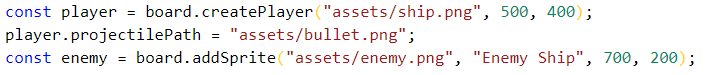
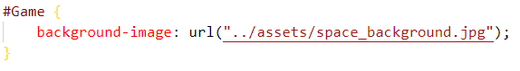
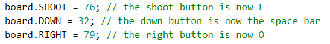
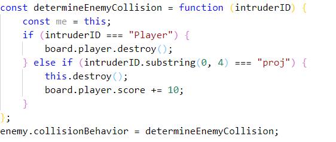

Adding Characters
A retro shooter needs enemies and of course a
player. In this section we will add those features
in.

We can only createPlayer once. After passing in a
player image location, width and height, we're ready
to go. With the player having been created we can
now specify a location for our projectile image.
This is done on the second line. Adding a non player
sprite has an additional argument; in the second
spot after the image path, we have to specify the
sprites id. ids are unique.
Make sure not to ever directly specify "Player" as
an id as this is reserved for the player and is
automatically done for you when calling createPlayer
You may also wish to add a background to your game
board
Adding a Background

Make sure you link your css file to your html file.
Also note that the game board will always have an id
of "Game". Factor this is when naming sprites
Changing Movement Keys
At this point the game should be playable with the
user moving with W,A,S,D key and the L key to shoot.
We may choose to remap these keys by reassigning the
UP, DOWN, RIGHT, LEFT and SHOOT properties of your
game instance.

Tip: use
keycode.info to
figure out key codes
Making Use of Collisions
Right now, the enemy and the player can tell that
they are touching each other but nothing is
happening. What we have to do is specify a
collisionBehavior for each sprite if we want it to
do something on collision. Also, we are able to
shoot the enemy but nothing is happening. Below
we're going to add these functionalities in.

A few things are happening here. First, we figure
out what collided with the enemy. So far there are
only two possibilities, the player or the player's
projectiles. We check to see if the collider is the
player and specify a behaviour. We destroy the
player if this is the case. Alternatively, if a
projectile hits the enemy we want the enemy to be
destroyed and increment the player's score. Finally
this function is useless if it is not assigned as
the enemy's collisionBehavior function. Note: the
variable 'me' here is unused but shows how can get
the enemy to be used in whatever way you want. Such
me.hitpoints = 4 and then decrementing it each hit.
All projectile ids are in the form "proj" plus a
number usually the current count of shots fired by
its owner. ex proj100 is the 100th shot. So we can
use the first 4 letters of a sprites id to determine
if it is a projectile.
*Please checkout an example on the examples part of
this website to see more about indeterminate topics
like movement. Examples